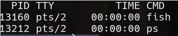
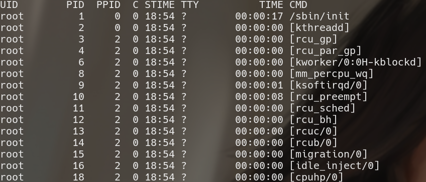
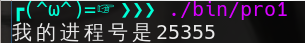
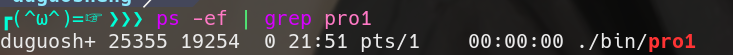
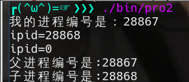
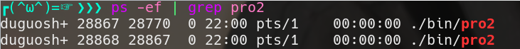
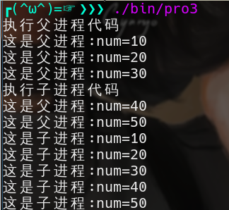

转自linux多进程
进程的概念
什么是进程？进程这个概念是针对系统而不是针对程序员的，对程序员来说，我们面对的概念是程序。当程序员敲入命令执行一个程序的时候，对系统而言，它将启动一个进程。进程就是正在内存中运行中的程序。
Linux下一个进程在内存里有三部分的数据，就是“代码段”、”堆栈段”和”数据段”。”代码段”，顾名思义，就是存放了程序代码。“堆栈段”存放的就是程序的返回地址、程序的参数以及程序的局部变量。而“数据段”则存放程序的全局变量，常数以及动态数据分配的数据空间（比如用new函数分配的空间）。
系统如果同时运行多个相同的程序，它们的“代码段”是相同的（因为代码是已经固定不变的），“堆栈段”和“数据段”是不同的（相同的程序，处理的数据不同）。
进程的编号
查看进程
1 | # 查看当前终端的进程 |
ps
ps -ef

| 参数 | 含义 |
|---|---|
| UID | 启动进程的操作系统用户。 |
| PID | 进程编号。 |
| PPID | 进程的父进程的编号。 |
| C | CPU使用的资源百分比。 |
| STIME | 进程启动时间。 |
| TTY | 进程所属的终端。 |
| TIME | 使用掉的CPU时间。 |
| CMD | 执行的是什么指令。 |
ps -ef | grep book查看系统全部的进程，然后从结果集中过滤出包含“book”单词的记录。程序员用得最多的指令就是这个了。
getpid库函数
getpid库函数的功能是获取本程序运行时进程的编号。
- 包含头文件：
1 |
- 函数声明：
1
pid_t getpid(void);
函数没有参数，返回值是进程的编号，pid_t就是typedef int pid_t
- 示例
1
2
3
4
5
6
7
8
9
int main()
{
printf("我的进程号是%d\n", getpid());
sleep(10); // sleep(10)是为了方便查看进程。
}
运行结果

终端查看

- 注意两个细节：
- 进程的编号是系统动态分配的，相同的程序在不同的时间执行，进程的编号是不同的。
- 进程的编号会循环使用，但是，在同一时间，进程的编号是唯一的，也就是说，不管任何时间，系统不可能存在两个编号相同的进程。
多进程
fork在英文中是“分叉”的意思。为什么取这个名字呢？因为一个进程在运行中，如果使用了fork函数，就产生了另一个进程，于是进程就“分叉”了，所以这个名字取得很形象。下面就看看如何具体使用fork函数，这段程序演示了使用fork的基本框架。
- 函数声明：
1
pid_t fork(void);
fork函数用于产生一个新的进程，函数返回值pid_t是一个整数，原有的进程称为父进程，新产生的进程称为子进程，在父进程中，返回值仍为进程编号，在子进程中，返回值是0。
- 示例
1
2
3
4
5
6
7
8
9
10
11
12
13
14
int main()
{
printf("进程编号是：%d\n", getpid());
int ipid = fork(); //创建一个新的进程
printf("ipid=%d\n", ipid);
sleep(10);
if(ipid!=0)
printf("父进程编号是:%d\n", getpid());
else
printf("子进程编号是:%d\n", getpid());
}
运行结果

查看进程情况，出现了两个book进程。

初学者可能用点接受不了现实。
- 一个函数（fork）返回了两个值？
- if和else中的代码能同时被执行？
那么调用这个fork函数时发生了什么呢？fork函数创建了一个新的进程，新进程（子进程）与原有的进程（父进程）一模一样。子进程和父进程使用相同的代码段；子进程拷贝了父进程的堆栈段和数据段。子进程一旦开始运行，它复制了父进程的一切数据，然后各自运行，相互之间没有影响。
fork函数对返回值做了特别的处理，调用fork函数之后，在子程序中fork的返回值是0，在父进程中fork的返回值仍是原进程的编号，程序员可以通过fork的返回值来区分父进程和子进程，然后再执行不同的代码。
在上文上已提到过，子进程拷贝了父进程的堆栈段和数据段，也就是说，在父进程中定义的变量子进程中会复制一个副本，fork之后，子进程对变量的操作不会影响交父进程，父进程对变量的操作也不会影响子进程
- 示例：
1
2
3
4
5
6
7
8
9
10
11
12
13
14
15
16
17
18
19
20
21
22
23
24
25
26
27
28
29
30
31
32
33
34
35
36
37
38
39
40
41
int fatchfunc(void); //父进程的业务主函数
int childfunc(void); //子进程的业务主函数
int num = 0;
int main()
{
if(fork()>0)
{
printf("执行父进程代码\n");
fatchfunc();
}
else
{
printf("执行子进程代码\n");
childfunc();
}
}
int fatchfunc(void)
{
for(int i=0; i<5; i++)
{
num += 10;
printf("这是父进程:num=%d\n", num);
}
return 0;
}
int childfunc(void)
{
for(int i=0; i<5; i++)
{
num += 10;
printf("这是子进程:num=%d\n", num);
}
return 0;
}
运行结果：
